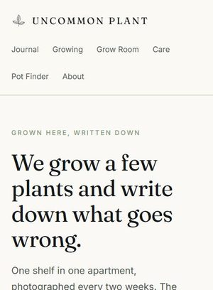
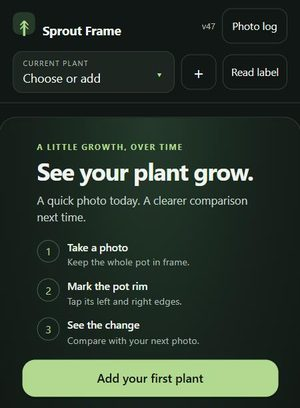
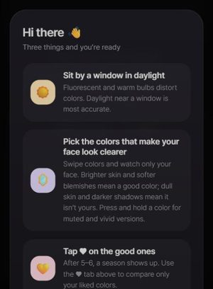
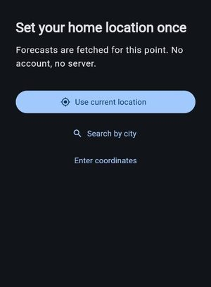
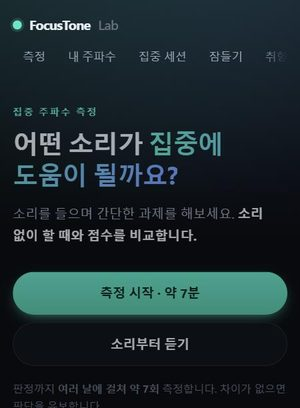
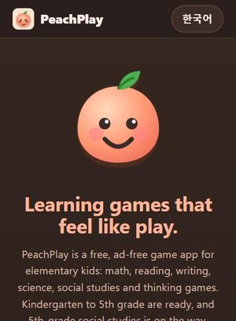
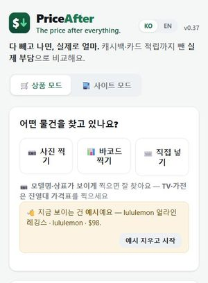
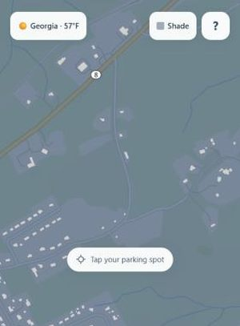

Altair Research Lab.
We design and ship small apps and websites, from idea to release. Here is what we have built so far, and how far each one has come.
What we build
- 🌐 Web apps & PWAs (install, offline)
- 🤖 Android apps (TWA, Flutter, in Play testing)
- 📷 Camera & imaging (color, measurement, OCR, barcodes)
- 🎧 Audio & measurement design
- 🗺️ Maps & large geospatial data (LiDAR)
- 🌏 Korean–English bilingual
🌱 Plants
-

Uncommon Plant → One shelf of plants, written up every two weeks: what grew, what stalled, what we got wrong. Nothing is for sale; the Pot Finder is free. NowLive · a new entry every two weeks · Korean edition in progress Editorial site · recommendation tool -

Sprout Frame → Shoot your plant, tap the pot rim twice, and see how much it grew since last time. Photos stay on your device. NowRuns in the browser (v47) · Android testing Camera measurement · label OCR · on-device storage
👗 Style
-

Personal Color Mirror → Hold seasonal drape colors up to your face on camera and pick the ones that make it look clearer. NowRuns in the browser · Android closed testing Live camera · color rendering · PWA to Android -

WearCast → What to wear for your weather: outfits, hourly forecasts and personal check-ins. NowRuns in the browser · Android closed test in review Flutter · weather & location · no account, no server
🧠 Focus & Learning
-

FocusTone Lab → Do a short task while listening, and compare your score with doing it in silence. NowLive · updated October 2026 Binaural audio · blinded measurement design -

PeachPlay → Free, ad-free learning games for elementary kids: math, reading, writing, science, social studies and thinking games. NowKindergarten to 5th grade ready · 5th-grade social studies on the way Learning games · offline PWA · Georgia standards
🧭 Everyday tools
-

PriceAfter → Compares where to buy by what you actually pay after cashback and card rewards. NowLive · v0.37 Photo & barcode product lookup · rewards engine -

ShadeSpot → Tap a parking spot on the map to see how long it stays in shade, and which way to park to catch less sun. NowSite is up · friends-and-family testing Maps · LiDAR heights for 35M buildings · shadow modeling